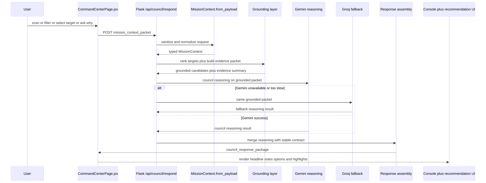

Đây không phải là một doc "backend có gì". Đây là technical case cho thấy Atlas Orrery là một sản phẩm AI hackathon có chủ đích: dữ liệu thật, reasoning thật, fallback thật, và một demo path đủ chắc để bước vào phòng chấm mà không run tay.
AI Science Council system được đóng khung bằng architecture rõ ràng.Gemini nằm ở đúng trung tâm của intelligence layer, không bị giấu sau một đống từ ngữ chung chung.Groq không phải tên phụ họa trong slide; nó là fallback path có chủ đích để giữ demo continuity.Chúng tôi cố ý thiết kế Atlas Orrery theo hướng AI-first but not AI-loose.
Điều đó có nghĩa là:
Đây là architecture để thắng một buổi chấm hackathon: AI phải nổi bật, nhưng hệ thống phải đứng vững.

Atlas Orrery dùng kiến trúc hybrid có chủ đích:
Gemini là reasoning engine chính cho Science Council: tranh luận, lập luận, ưu tiên mục tiêu, diễn giải cho người chơi.Groq là fallback path để demo không bị phụ thuộc một provider duy nhất.Nếu giám khảo chỉ đọc đúng một phần của file này, họ phải nhìn ra ngay 4 ý:
Gemini là primary intelligence path, còn Groq là fallback path để bảo vệ demo.CommandCenterPage.jsxmission_context_packet.POST /api/council/respond.Đẩy council result vào ConsolePanel, recommendation card, highlight logic.
GalaxyCanvas.jsx + OrreryEngine.js
Quản lý tracking, scan effects, discovered targets, camera state.
ConsolePanel.jsx
Không diễn giải lại response; chỉ trình bày contract đã được backend bảo đảm.
MissionControl.jsx
grid, spiral, targeted.server.py là HTTP boundary duy nhất giữa UI và council system.mission_context_packet và chuyển vào council path.council_orchestrator.py là nơi một council turn thực sự diễn ra.Gemini,Groq nếu cần,council_response_package.council_schemas.pykhóa response schema.
council_tools.py
insufficient_evidence.data/orbital_elements.csvruntime source of truth cho orbital catalog.
data/orbital_elements.meta.json
lineage, refreshed timestamp, rows, solver, epoch policy.
data/TOI_2025.10.02_08.11.35.csv
refresh_orbital_catalog.pypublish artifact.
install_nightly_refresh_launchd.py
Atlas Orrery sẽ không thắng hackathon nếu AI chỉ nằm ở caption hoặc ở phần roadmap. AI phải là trái tim của trải nghiệm. Vì vậy AI Council Layer không phải phần trang trí; nó là nơi dữ liệu thiên văn được biến thành một hội đồng khoa học có chính kiến.
Gemini là reasoning engine chính vì chúng tôi cần:
Groq tồn tại vì hackathon demo cần một thứ còn quan trọng hơn sự lý tưởng: khả năng sống sót trên sân khấu.
Fallback policy:
Gemini như primary path.Groq.Điều này biến fallback thành một chiến lược kỹ thuật rõ ràng, không phải một cái cớ sau khi hệ thống lỗi.
AI được phép:
AI không được phép:
Deterministic evidence selection tạo một lớp nền mà giám khảo kỹ thuật có thể tin. Gemini tạo lớp intelligence mà giám khảo AI muốn thấy. Groq giữ demo continuity mà đội thi cần có để không sụp ở phút thứ 89. Cả ba lớp đó kết hợp mới tạo ra một submission có sức nặng thực chiến.

Runtime flow này có một điểm mấu chốt: AI value không nằm ở bước parse request hay ở bước trả JSON. AI value nằm ở bước reasoning trên grounded packet. Đó là phần phải bật lên khi giám khảo đọc sơ đồ.
orrery_component/frontend/src/pages/CommandCenterPage.jsxowns log append and mission action wiring.
orrery_component/frontend/src/lib/orreryEngine.js
owns visual tracking and discovery interactions.
orrery_component/frontend/src/components/ConsolePanel.jsx
owns council output presentation.
orrery_component/frontend/src/components/MissionControl.jsx
server.pyowns endpoint dispatch.
council_orchestrator.py
owns final response assembly.
council_schemas.py
owns stable schema contract.
council_tools.py
Để architecture này thật sự sắc, prompt path cũng phải có boundary rõ.
Model không nhận raw request mơ hồ. Model nhận:
mission mode,player goal,Model phải trả về reasoning payload có thể map vào:
headline,primary_recommendation,council_votes,player_options,discovery_log_entry.Ví dụ này ngắn nhưng đủ để người đọc hiểu đây là một hệ thống thật, không phải slideware.
{
"mode": "discovery",
"player_goal": "find potentially habitable worlds",
"selected_planet_id": "Kepler-442 b",
"filters": {
"showConfirmed": true,
"showHabitable": true,
"radiusMin": 0.7,
"radiusMax": 2.2,
"periodMin": 1,
"periodMax": 500
},
"recent_actions": ["spiral_scan", "open_planet_modal"]
}
{
"primary_candidate": "Kepler-442 b",
"baseline_score": 0.81,
"radius_earth": 1.34,
"temp_k": 285.0,
"insolation": 0.95,
"eccentricity": 0.08,
"period_days": 112.4,
"risk_flags": ["atmosphere_unknown"]
}
{
"mission_status": "candidate_with_risk",
"headline": "Council flags Kepler-442 b for deep review",
"primary_recommendation": {
"action": "targeted_scan",
"target_id": "Kepler-442 b",
"reason": "Grounded evidence places the target near the habitable heuristic band."
},
"council_votes": [
{
"agent": "Navigator",
"stance": "support",
"confidence": 0.82,
"message": "This target should be prioritized next."
},
{
"agent": "Climate",
"stance": "caution",
"confidence": 0.71,
"message": "Orbital uncertainty and missing atmosphere data limit certainty."
}
]
}
mission_context_packet){
"mode": "challenge",
"player_goal": "find high-potential habitable candidates in 5 minutes",
"selected_planet_id": "Kepler-442 b",
"selected_piz_id": null,
"filters": {
"showConfirmed": true,
"showHabitable": true,
"radiusMin": 0.7,
"radiusMax": 2.2,
"periodMin": 1,
"periodMax": 500
},
"challenge_state": {
"active": true,
"objective": "Find 2 candidate worlds",
"progress": 1
},
"recent_actions": ["spiral_scan", "open_planet_modal"]
}
council_response_package){
"mission_status": "candidate_with_risk",
"headline": "Council ưu tiên Kepler-442 b cho bước kế tiếp",
"primary_recommendation": {
"action": "targeted_scan",
"target_id": "Kepler-442 b",
"reason": "Scored 0.81 on baseline habitability under current goal"
},
"council_votes": [
{
"agent": "Navigator",
"stance": "support",
"confidence": 0.82,
"message": "Recommend targeted follow-up based on ranking gain.",
"evidence_fields": ["pl_orbper", "pl_orbsmax", "sy_dist"]
},
{
"agent": "Astrobiologist",
"stance": "support",
"confidence": 0.8,
"message": "Radius-temperature-insolation triad is within exploratory viability bounds.",
"evidence_fields": ["pl_rade", "pl_eqt", "pl_insol"]
},
{
"agent": "Climate",
"stance": "caution",
"confidence": 0.71,
"message": "Orbital uncertainty needs deeper verification.",
"evidence_fields": ["pl_orbeccen", "pl_orbper", "pl_orbincl"]
}
],
"player_options": [
"Run targeted scan",
"Compare nearest analogs",
"Open full data dossier"
],
"discovery_log_entry": "Kepler-442 b promoted after council triage.",
"evidence_summary": {
"radius_earth": 1.34,
"temp_k": 285.0,
"insolation": 0.95,
"eccentricity": 0.08,
"period_days": 112.4
}
}
mode chỉ nhận sandbox, challenge, discovery.recent_actions luôn là list[str] và bị cap.insufficient_evidence.data/orbital_elements.csv.data/orbital_elements.meta.json.council_schemas.py.council_tools.py.council_orchestrator.py.| Component | Owns | Out of scope |
|---|---|---|
| React client | Interaction, state aggregation, API calls, rendering | Scientific scoring, dataset mutation |
| Flask API | HTTP boundary, payload intake, response transport | Free-form science reasoning inside routes |
council_orchestrator.py |
Provider routing, council synthesis, response assembly | Raw dataset IO, orbit propagation |
council_tools.py |
Deterministic ranking, scoring, evidence packet generation | Network calls, provider control |
council_schemas.py |
Input normalization and stable contracts | Endpoint transport |
| Refresh scripts | Catalog refresh and metadata publish | Runtime council decision handling |
| Boundary | Statement |
|---|---|
| Guaranteed | Frontend luôn nhận stable response keyset; fallback không làm vỡ UI contract; deterministic grounding chạy độc lập với provider state. |
| Assumed | API keys sẵn sàng cho phiên demo; catalog refresh hoàn tất trước giờ chấm; backend chạy local single-instance. |
| Out of scope | Horizontal scaling, multi-region deployment, long-lived production telemetry stack. |
| Decision | Why this is the right bet for hackathon | Trade-off |
|---|---|---|
Gemini primary reasoning |
Làm AI trở thành phần trung tâm của product experience | Phụ thuộc provider health |
Groq fallback |
Bảo vệ demo continuity | Tăng orchestration complexity |
| Deterministic grounding layer | Chặn hallucination và tăng khả năng defend trước judge kỹ thuật | Cần giữ discipline khi mở rộng |
| Stable structured contract | FE render chắc, ít bug, dễ demo | Ít tự do hơn response thuần text |
| Data artifact freeze trước demo | Giảm failure ngay trước giờ chấm | Có thể không là snapshot mới nhất |
AI mạnh nhưng không đáng tin. - Mitigation: mọi reasoning phải bám grounded evidence packet.
Provider chính lỗi ngay lúc demo.
- Mitigation: Groq fallback path với cùng contract và cùng evidence packet.
FE phải branch riêng cho từng model path. - Mitigation: response assembly luôn hợp nhất về một schema duy nhất.
Judge hỏi "Gemini ở đâu".
- Mitigation: Gemini được chỉ ra trực tiếp trong sơ đồ hệ thống, request flow, fallback strategy, và runtime reasoning path.
Judge hỏi "nếu AI bịa thì sao".
- Mitigation: deterministic grounding, evidence fields, insufficient_evidence, hard line giữa AI layer và scoring layer.
Atlas Orrery được thiết kế như một submission đang lao thẳng vào sân khấu hackathon: đủ dữ liệu thật để thuyết phục, đủ AI để tạo wow factor, đủ deterministic guardrails để không tự bắn vào chân, và đủ fallback strategy để sống sót qua áp lực demo. Gemini là trung tâm của intelligence layer. Groq là chiếc dù an toàn. Phần còn lại của hệ thống tồn tại để hai điều đó phát huy tác dụng mà không làm mất kiểm soát.